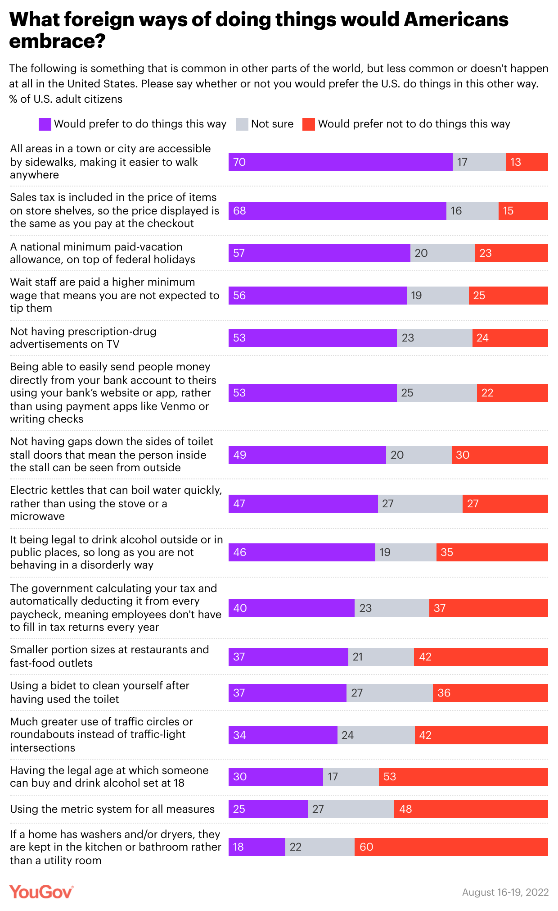
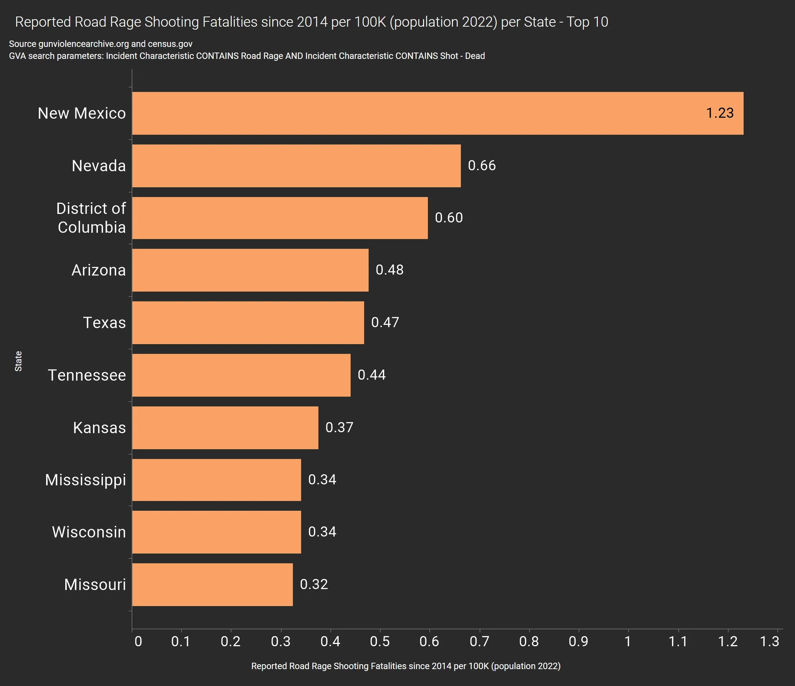

Assignment 2: Critique of Visualizations
Example 1:

Problems of this visualization:
-
The text in this visualization is rather small and numerous.
It can be hard to get what the visualization is trying to present at first glance.
-
There are only persentage of the data in this visualization.
There is no way to tell how many people in total participated in this survey.
This information is rather important because this visualization is stated to reflect the opinions of the "U.S. adult citizens".
It would not be fair if the number of people who took the survey is too small.
-
In this visualization there are topics which the majority of the people agrees with and also topics which the majority of people don't accept.
Although different colors are utilized to highlight "would prefer to" and "would prefer not to", the contrast is not clear enough.
Possible improvement of this visualization:
-
The visualization shows how the Americans think of foreign ways of doing certain things.
These things cover many aspects of daily life, including payment, traffic, government regulations, etc.
It would be more clear to have these things catogerized into different topics so people would be able to know at first glance what this visualization roughly covers.
-
It may be better to align the bars according to the "Not Sure" section so that it would be more clear which one of these things the Americans agrees with or not.
Example 2:

Problems of this visualization:
-
This visualization provides data for top 10 states in the U.S. with reported road rage shooting fatalities.
Although the number is quite clear, it may need references for better understanding of the data.
Possible improvement of this visualization:
-
The visualization may be improved by drawing a line across all bars indicating the average number of reported road rage shooting fatalities in the U.S.,
so that people would understand how bad the situation is in these 10 states.
Also, we can try to add the persentage of reported road rage shooting fatalities in all death records in these states,
to provide additional background information.